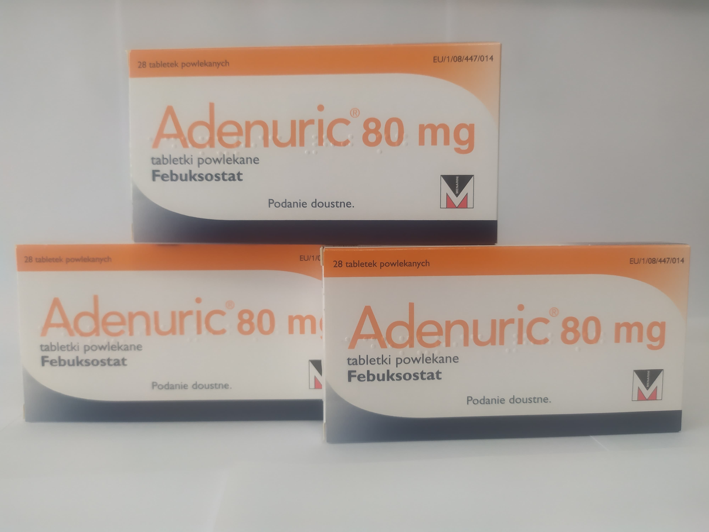

Контактная информация:
Цена: Уточнять у менеджера
Под заказ
Производитель: Франция
Цена: Уточнять у менеджера
Под заказ
Именно в FarmItal вы можете купить Аденурик,Adenuric в Украине, Гарантированно Качественный!
Доставка Аденурик осуществляется транспортными компаниями, сроки выполнения заказа оговариваются менеджером Фармитал. Вы можете заказать Аденурик капсулы в городах: Одесса, Херсон, Чернигов, Северодонецк, Бердянск, Бровары, Днепр, Винница, Киев, Славянск, Полтава, Краматорск, Белая Церковь, Каменское, Мариуполь, Черновцы, Александрия, Каменец -Подольский, Львов, Запорожье, Кропивницкий, Житомир, Ивано-Франковск, Сумы, Черкассы, Константиновка, Мелитополь, Кривой Рог, Ровно, Луцк, Никополь, Павлоград, Ужгород, Кременчуг, Лисичанск, Хмельницкий, Тернополь, Харьков, Николаев, а также в других населённых пунктах Украины.
Таблетки, покрытые пленочной оболочкой.
Лекарственные средства для лечения подагры. Лекарственные средства, угнетающие образование мочевой кислоты.
Лечение хронической гиперурикемии при заболеваниях, сопровождающихся отложением кристаллов уратов, в том числе при наличии тофусов и/или подагрического артрита в настоящее время или в анамнезе.
Гиперчувствительность к активному веществу или любому другому вспомогательному веществу препарата.
действующее вещество: 1 таблетка, покрытая пленочной оболочкой, содержит фебуксостата 80 мг.
вспомогательные вещества: лактозы моногидрат, гидроксипропилцеллюлоза, микрокристаллическая целлюлоза, натрия кроскармелоза, магния стеарат, кремния диоксид коллоидный водный, поливиниловый спирт, титана диоксид (Е 171), полиэтиленгликоль, тальк, тальк, тальк.
Часто побочными реакциями в клинических исследованиях и в процессе постмаркетингового надзора были обострение (приступы) подагры, нарушение функции печени, понос, тошнота, головная боль, сыпь и отеки. Эти реакции имели, в большинстве случаев, легкую и среднюю степень тяжести. Во время постмаркетингового надзора были сообщения о серьезных реакциях гиперчувствительности на фебуксостат, некоторые из них сопровождались системными реакциями.
Хранить в недоступном для детей месте. Не требует особых условий хранения.